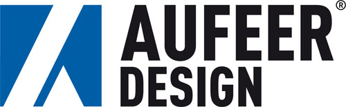
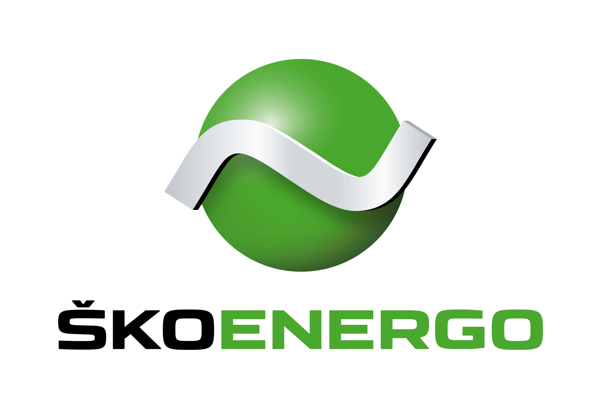
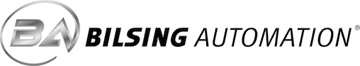
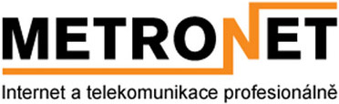
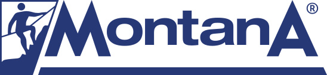
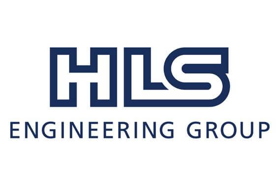
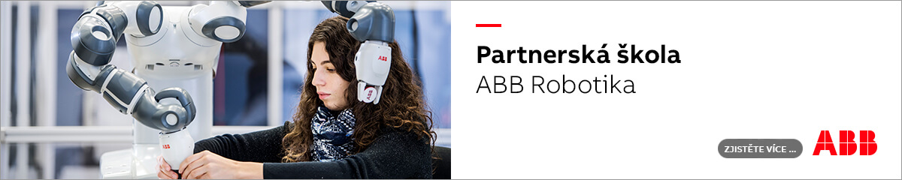

Sociální partneři
Spolupráce s firmami
Spolupracujeme s řadou významných firem v našem regionu, a to v několika oblastech:
- Naši žáci mají v rámci výuky povinnou dvoutýdenní praxi, kterou konají ve firmách formou výrobní praxe.
- Ve firmách probíhá u vybraných studentů i praxe individuální, jejímž výsledkem je zpracování práce, kterou student prezentuje v rámci praktické maturity. Firmy si tímto způsobem vychovávají specialisty již po dobu jejich středoškolských studií.
- Významnou součástí spolupráce je i podpora výuky formou zapůjčení nebo darování přístrojů, materiálu a dalších pomůcek pro výuku.
- Absolventi naší školy mohou ve firmách začít svoji profesní kariéru.
V následujících článcích naleznete prezentace firem, se kterými spolupracujeme.
Škoda Auto a.s.
Společnost Škoda Auto chce být vždy krok před konkurencí, proto je včasná příprava a výchova mladých odborníků v popředí našeho zájmu. Pro absolventy SPŠ Mladá Boleslav nabízíme zajímavá uplatnění. Startem Vaší pracovní kariéry ve Škoda Auto poznáte proces výroby automobilu od základu (pozice ve výrobě vozů, či zajištění kvality). Záleží však na Vašem zájmu a motivaci k dalšímu odbornému růstu prostřednictvím široce rozvinutému systému vzdělávání, které Škoda Auto nabízí svým zaměstnancům.
Aufeer Design

Společnost Aufeer Design vznikla v roce 2000. Dnes patří mezi významné dodavatele konstrukčních a vývojových prací pro české i zahraniční odběratele. Ve vývojovém centru v Mladé Boleslavi nabízíme komplexní služby v oblasti designérských, vývojových, konstrukčních a výpočtových produktů zejména pro výrobce automobilů a jejich dodavatele. Odborné týmy specialistů zaměřených na design, výpočty a simulace, vývoj a konstrukci karoserie a interiéru, elektrických svazků, elektroniky vozu a lisovacího nářadí v moderním prostředí pracují na finální podobě moderních dopravních prostředků.
ŠKOENERGO

Jsme moderní společnost, která má na starosti komplexní energetické hospodářství jedné z nejúspěšnějších českých značek – ŠKODA AUTO. Kromě Mladé Boleslavi, kde navíc zásobujeme teplem domácnosti a firmy, působíme ve Vrchlabí a Kvasinách.
Bilsing Automation

Stavíme manipulátory – tím umožňujeme automatizaci. Širokým spektrem vlastních komponent vybavujeme lisovny plechů, plastů i svařovny. Jsme technici a určujeme trendy v oblasti manipulační techniky. Naše komponenty známe od návrhu, přes výrobu až po instalaci u zákazníka. Pracujeme s High-End materiály i procesy – s karbonem, hliníkovými výkovky, ocelovými přesnými odlitky. Obrábíme na CNC soustružnických a frézovacích centrech Gildemeister, Mazak, Hurco, Chiron, AXA, Deckel Maho. Kreslíme v CATII V5 R18 – 3D, 2D, objemové díly, sestavy; formy pro vlastní přísavky.
Metronet s.r.o.

Firma se od svého založení zabývala především prodejem HW a správou IT. Postupně nabývala na významu hlavně výstavba a správa sítí. Dnes se firma specializuje především na internet a telekomunikace. METRONET s.r.o. nabízí služby jako připojení k internetu, internetová televize a rádia, telefonie přes internet, balíčky služeb ISP. Profesionalita je podtržena jedinečnou strukturou sítě s plnou zálohou (geografickou i technologickou) a certifikací od renomovaných firem CISCO, ALCOMA.
EDAG Engineering CZ
S více než 8000 zaměstnanci, na téměř 60 místech, v 19 zemích nabízíme široké spektrum služeb v oblasti kompletního vývoje vozidel. Naše know how uplatňujeme v automobilovém průmyslu, letectví a všeobecném strojírenství. Rozvíjíme se v konstrukci přístrojových desek, karosérie, STRAKU (vyhlazování ploch), elektřiny a světel. Jsme aktivní i v oblasti elektroniky, kde vyvíjíme software, kabeláže vozidel, multimediální systémy a řešíme connectivitu a HMI. Zabýváme se mimo jiné simulacemi nárazu, ochranou posádky a chodců a jsme u aerodynamických návrhů vozidel. Provádíme pevnostní výpočty leteckých konstrukcí a dodáváme certifikační zprávy.
MONTANA s.r.o.

Společnost MONTANA s.r.o. Mladá Boleslav prošla od svého založení v roce 1993 značným vývojem. Díky profesionální práci našich téměř 80 zaměstnanců, vlastnímu technologickému zázemí v Mladé Boleslavi a poskytování služeb s přidanou hodnotou, jsme se z malé firmy stali předním technologickým dodavatelem s mezinárodním přesahem. V roce 2016 se stala součástí společnosti DREAMland s.r.o.
HLS Czech s.r.o.

Společnost HLS Czech s.r.o. byla založena v roce 1998 jako pobočka společnosti HLS Ingenieurbüro GmbH se sídlem v Augsburgu v Německu. Hlavní činností firmy je provádění komplexních inženýringových prací ve strojírenství se zaměřením na automobilový průmysl a oblast výroby automobilové karoserie. V kanceláři v Mladé Boleslavi odborné týmy projektantů, konstruktérů a pracovníků simulace a programování zpracovávají projekty pro zákazníky z prestižní oblasti automobilového průmyslu nejen z České republiky, ale i ze zahraničí.
ABB

Jsme mezinárodní technologická společnost s vlastním vývojem a výrobou v České republice. Za 30 let jsme dodali zákazníkům v ČR více jak 5000 robotů a robotických pracovišť. Se školami a universitami spolupracujeme dlouhodobě a rádi, je to pro nás výzva, radost ale i závazek.
Jsme na Facebooku
SPŠ Mladá BoleslavStáž v zahraničí
V rámci vzdělávacího programu Erasmus+ absolvují vybraní studenti zahraniční stáž v Anglii nebo v Irsku. Stáži předchází přípravné hodiny angličtiny. Třítýdenní pobyt je plně hrazen z prostředků projektu.
Více o ErasmuZřizovatel školy
Střední průmyslová škola, Mladá Boleslav, Havlíčkova 456 je příspěvková organizace zřizovaná Středočeským krajem.